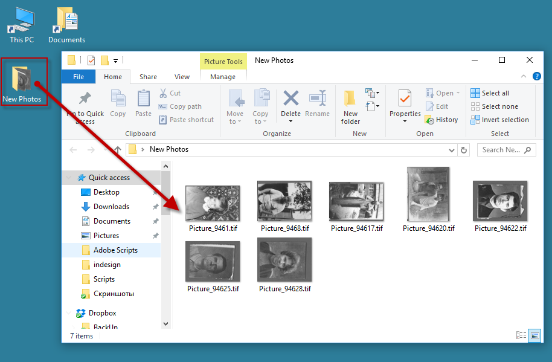
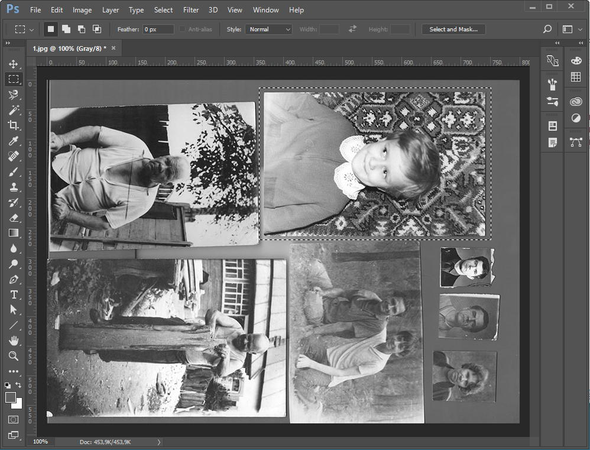

New Image from Selection
Author: Larry B. Ligon.
Purpose: This script will create a new document from a selection.
Requirements: Must have a document open and a selection made.
Limitations: Photoshop CS and above only. If the selection only covers part of the non-transparent part of the layer, the resulting document will contain only the non-transparent section of the layer. If the layer has effects, the effects will not be included. You have to rasterize the layer first. If the layer is a text layer, the resulting layer in the new document will not be a text layer but a rasterized version of the selection. Does not work with shape layer, you have to rasterize it first.
I made some modifications to my liking:
- it automatically creates the New Photos folder on the desktop if it doesn’t exist yet
- it saves newly created images as compressed and flattened TIF files generating unique file names in the format “Picture_” + Hours + Minutes + Seconds, and automatically closes the files.

The script is extremely useful when you need to scan a lot of images quickly. I recommend you to assign a keyboard shortcut to it. Put as many pictures as you can fit on the scanner bed to scan them all in one go and then part them with the script.

Click here to download the New Image from Selection script (modified by Kasyan). The original version — New Document from Selection — written by Larry B. Ligon is here.